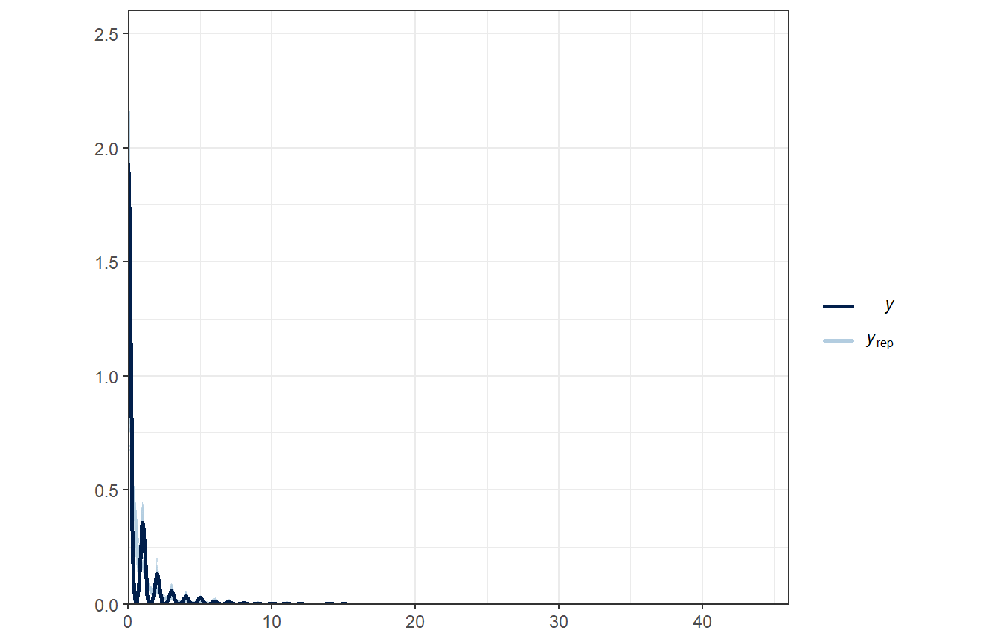
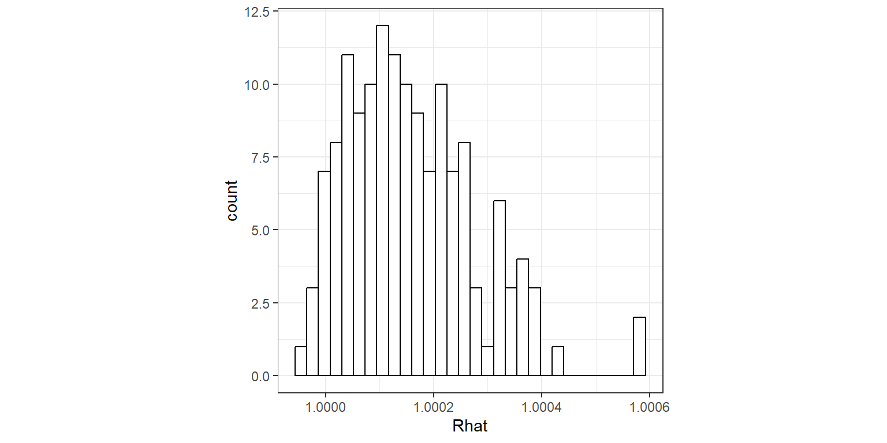
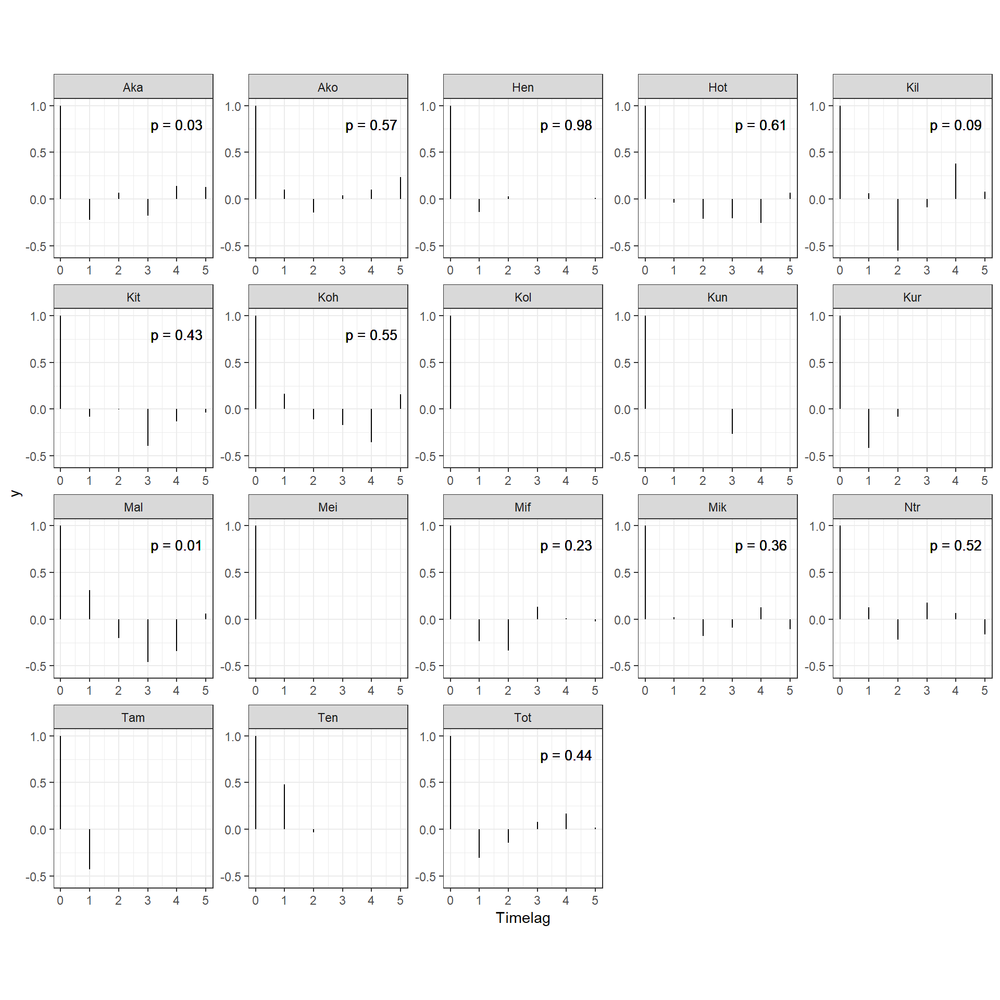
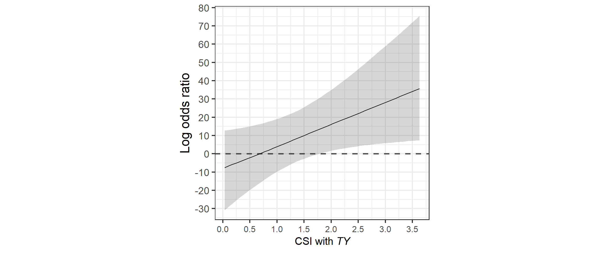
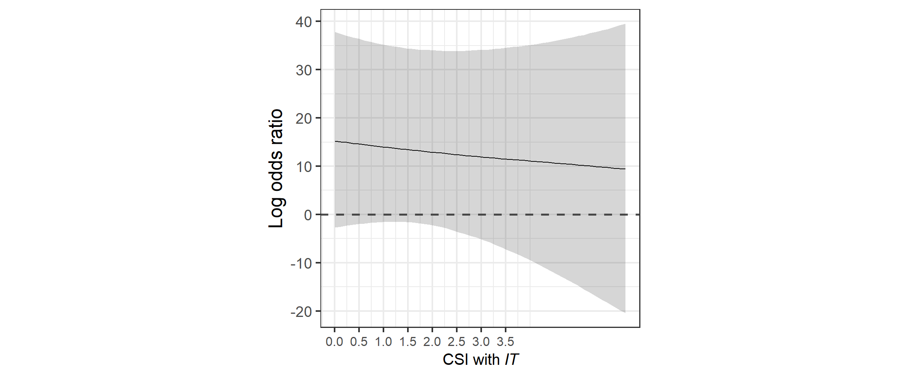
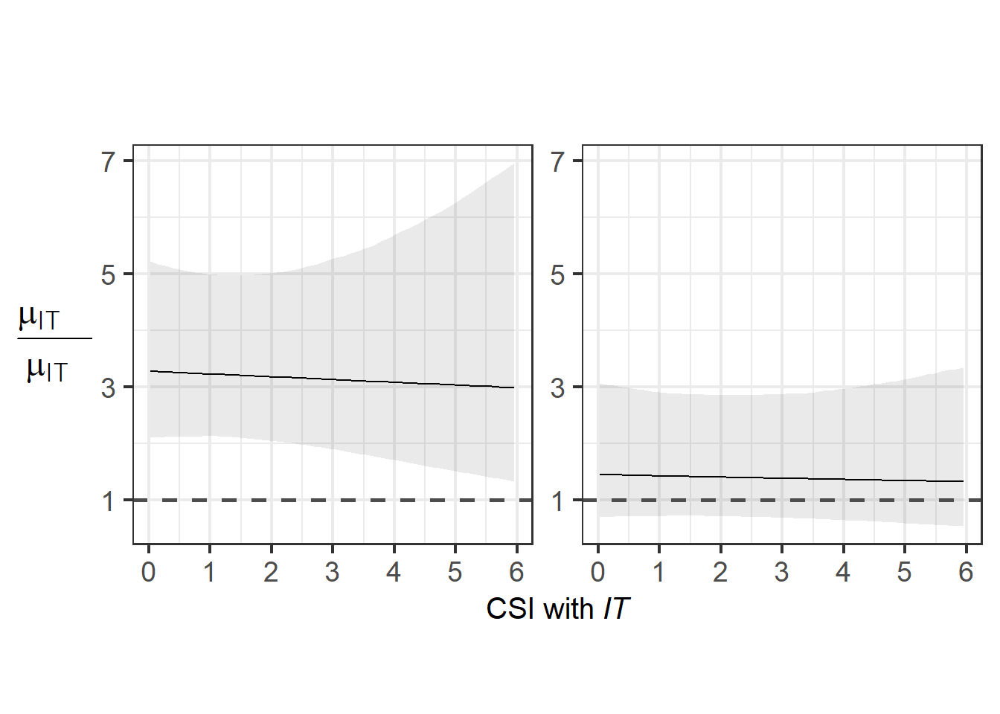

11 メスが群れに戻るときのメカニズム
本章では、メスが群れに戻るのはどのようなときなのかに関する分析を行う。以下では、メスの毎日の確認状況のデータからメスが群れに戻る要因を探る(図11.1)。
図11.1: メスの確認状況に影響する要因
11.1 データの加工
11.1.1 オスの出入り情報
まず、オスの出入り情報について算出する。第
TYIT_presence_pre %>%
mutate(TY_state4 = ifelse(TY_pre == 1 & TY == 1, "TY_stay",
ifelse(TY_pre == 1 & TY == 0, "TY_out",
ifelse(TY_pre == 0 & TY == 1, "TY_return",
ifelse(TY_pre == 0 & TY == 0, "TY_absent", NA))))) %>%
mutate(TY_state4 = fct_relevel(TY_state4, "TY_stay", "TY_absent","TY_return")) %>%
mutate(IT_state4 = ifelse(IT_pre == 1 & IT == 1, "IT_stay",
ifelse(IT_pre == 1 & IT == 0, "IT_out",
ifelse(IT_pre == 0 & IT == 0, "IT_absent",
ifelse(IT_pre == 0 & IT == 1, "IT_return", NA))))) %>%
mutate(IT_state4 = fct_relevel(IT_state4, "IT_stay", "IT_absent","IT_return")) %>%
mutate(TY_state = ifelse(TY_pre == 0 & TY == 1, "TY_return",
ifelse(TY_pre == 0 & TY == 0, "TY_absent",
ifelse(TY_pre == 1, "TY_present", NA)))) %>%
mutate(TY_state = fct_relevel(TY_state, "TY_present", "TY_absent","TY_return")) %>%
mutate(IT_state = ifelse(IT_pre == 0 & IT == 1, "IT_return",
ifelse(IT_pre == 0 & IT == 0, "IT_absent",
ifelse(IT_pre == 1, "IT_present", NA)))) %>%
mutate(IT_state = fct_relevel(IT_state, "IT_present", "IT_absent","IT_return")) %>%
mutate(TY_return = ifelse(TY_state4 == "TY_return", 1, 0),
IT_return = ifelse(IT_state4 == "IT_return", 1, 0)) %>%
replace_na(list(IT_state4 = "IT_absent",
IT_state = "IT_absent",
IT_return = 0)) -> male_state11.1.2 メスが群れに戻った日の同定
続いて、各メスが群れに戻ったか否かを記したデータフレームを作成する。
## 発情状態とアカンボウの有無を結合
female_pre_long %>%
mutate(date_pre = date - 1) %>%
left_join(female_pre_long %>%
select(date, femaleID, presence) %>%
rename(presence_pre = presence),
by = c("date_pre" = "date", "femaleID")) %>%
mutate(female_in = ifelse(is.na(presence_pre), NA,
ifelse(presence_pre == 0 & presence == 1,1,0))) %>%
## 前日にメスがいない日のみを抽出
filter(presence_pre == 0) %>%
## オスの出入りがある期間のみを抽出
filter(study_period %in% c("m19", "m20", "m21", "nm20", "nm21")) %>%
left_join(female_all %>%
select(date,femaleID, rs2), by = c("date","femaleID")) -> female_in11.1.3 血縁個体が群れに戻ったか否か
続いて、各観察日に血縁個体が群れに戻ったか否かを算出する。
kin <- read_csv("../Data/data/others/kin.csv")
female_in %>%
select(groupID, date, study_period, femaleID, female_in, presence_pre) %>%
## 他のメスのデータを結合
left_join(att %>%
filter(age >= 6) %>%
select(study_period, femaleID) %>%
rename(femaleID2 = femaleID),
by = "study_period") %>%
filter(femaleID != femaleID2) %>%
## 他のメスが群れを離れたか否かの列を作成
left_join(female_in %>%
select(groupID, date, femaleID, female_in) %>%
rename(female_in2 = female_in,
femaleID2 = femaleID),
by = c("groupID","date", "femaleID2")) %>%
replace_na(list(female_in2 = 0)) %>%
## 相手のメスとの血縁度を結合
left_join(kin, by = c("femaleID", "femaleID2")) %>%
filter(female_in2 == 1) %>%
## それぞれの日で離れたメスの最大の血縁度を算出
group_by(groupID, date, femaleID) %>%
summarise(max_kin = max(kin),
## 血縁カテゴリーも作成する
kin_cat = as.character(max(kin))) %>%
mutate(kin_01 = ifelse(max_kin > 0, 1,0)) -> kin_female_in11.1.4 全データの結合
最後に、全データを結合する。
female_in %>%
left_join(no_female_over0.5 %>%
select(date, prop_female) %>%
rename(date_pre = date),
by = c("date_pre")) %>%
left_join(male_state %>% select(date, groupID, TY_state4, IT_state4, TY_state, IT_state, TY_return, IT_return),
by = c("date", "groupID")) %>%
left_join(CSI_TY %>%
rename(femaleID = subject) %>%
select(femaleID, CSI_TY),
by = "femaleID") %>%
left_join(CSI_IT %>%
rename(femaleID = subject) %>%
select(femaleID, CSI_IT),
by = "femaleID") %>%
left_join(no_female_over0.5_b %>%
select(date, TY, IT) %>%
mutate(date = date + 1) %>%
rename(TY_pre = TY,
IT_pre = IT)) %>%
left_join(kin_female_in,
by = c("groupID","date", "femaleID")) %>%
left_join(sum_ntm, by = c("date_pre" = "date")) %>%
left_join(agg_rate_all %>%
select(date, rate_agg_all) %>%
mutate(date = date + 1) %>%
rename(rate_agg_all_pre = rate_agg_all), by = c("date")) %>%
replace_na(list(max_kin = 0,
kin_cat = "no")) %>%
mutate(kin_01 = ifelse(max_kin > 0, 1,0)) %>%
mutate(kin_cat = as.factor(kin_cat)) %>%
group_by(study_period) %>%
## 相対順位を算出
mutate(max_rank = max(rank)) %>%
ungroup() %>%
mutate(rank_scaled = rank/max_rank) -> female_in_final11.2 分析(モデリング)
以下では、交尾期と非交尾期に分けて分析を行う。分析に含まれるのは、6歳以上でかつTY、ITとのCSIが算出できる個体(= 2019年時点で6歳以上の個体)である。
11.2.1 交尾期
11.2.1.1 データの加工
まず、データの加工を行う。データ数が少ないのと、区別が難しいので発情/非発情は分けない。
female_in_m <- female_in_final %>%
filter(!str_detect(study_period, "nm")) %>%
drop_na(CSI_TY) %>%
mutate(CSI_TY_std = standardize(CSI_TY),
CSI_IT_std = standardize(CSI_IT),
ntm_std = standardize(no_ntm),
prop_std = standardize(prop_female),
rank_std = standardize(rank_scaled),
age_std = standardize(age),
rate_agg_all_std = standardize(rate_agg_all_pre)) %>%
mutate(N = 1:n())11.2.1.2 モデリング1
まず、TYとITが群れに戻ったか否かという2水準の変数を用いてモデリングを行う。モデルの詳細は以下のとおりである。なお、連続変数はすべて標準化している。
- 応答変数: メスが群れに戻ったか否か(\(female_in\))
- 説明変数: TYが群れに戻ったか(\(TY_return\))、TYとの親密度(\(CSI_TY\))、これらの交互作用、ITが群れに戻ったか(\(IT_return\))、ITとの親密度(\(CSI_IT\))、これらの交互作用、年齢(\(age_std\))、順位\(rank_std\)、前日の確認メス割合\(prop_std\)、前日の群れ外オス数\(ntm_std\)、前日のオスの攻撃頻度(\(rate_agg_std\))
- ランダム切片: メスID(\(femaleID\))、日付(\(date\))
モデルは以下のように実行する。
### ITとCSIの交互作用はVIFが高いので除く
m_female_in_m <- brm(data = female_in_m %>%
mutate(date = as.factor(date)),
female_in ~ TY_return*CSI_TY_std + IT_return*CSI_IT_std + kin_01 +
rank_std + age_std + ntm_std + prop_std + rate_agg_all_std +
study_period + (1|femaleID) + (1|date) + (1|N),
family = "bernoulli",
prior = c(prior(student_t(4,0,10),class = Intercept),
prior(student_t(4,0,10), class = b),
prior(student_t(4,0,5), class = sd)),
iter = 11000, warmup = 1000, seed = 112,
control=list(adapt_delta = 0.999, max_treedepth = 15),
backend = "cmdstanr",
file = "model/m_female_in_m")## Running MCMC with 4 sequential chains...
##
## Chain 1 Iteration: 1 / 11000 [ 0%] (Warmup)
## Chain 1 Iteration: 100 / 11000 [ 0%] (Warmup)
## Chain 1 Iteration: 200 / 11000 [ 1%] (Warmup)
## Chain 1 Iteration: 300 / 11000 [ 2%] (Warmup)
## Chain 1 Iteration: 400 / 11000 [ 3%] (Warmup)
## Chain 1 Iteration: 500 / 11000 [ 4%] (Warmup)
## Chain 1 Iteration: 600 / 11000 [ 5%] (Warmup)
## Chain 1 Iteration: 700 / 11000 [ 6%] (Warmup)
## Chain 1 Iteration: 800 / 11000 [ 7%] (Warmup)
## Chain 1 Iteration: 900 / 11000 [ 8%] (Warmup)
## Chain 1 Iteration: 1000 / 11000 [ 9%] (Warmup)
## Chain 1 Iteration: 1001 / 11000 [ 9%] (Sampling)
## Chain 1 Iteration: 1100 / 11000 [ 10%] (Sampling)
## Chain 1 Iteration: 1200 / 11000 [ 10%] (Sampling)
## Chain 1 Iteration: 1300 / 11000 [ 11%] (Sampling)
## Chain 1 Iteration: 1400 / 11000 [ 12%] (Sampling)
## Chain 1 Iteration: 1500 / 11000 [ 13%] (Sampling)
## Chain 1 Iteration: 1600 / 11000 [ 14%] (Sampling)
## Chain 1 Iteration: 1700 / 11000 [ 15%] (Sampling)
## Chain 1 Iteration: 1800 / 11000 [ 16%] (Sampling)
## Chain 1 Iteration: 1900 / 11000 [ 17%] (Sampling)
## Chain 1 Iteration: 2000 / 11000 [ 18%] (Sampling)
## Chain 1 Iteration: 2100 / 11000 [ 19%] (Sampling)
## Chain 1 Iteration: 2200 / 11000 [ 20%] (Sampling)
## Chain 1 Iteration: 2300 / 11000 [ 20%] (Sampling)
## Chain 1 Iteration: 2400 / 11000 [ 21%] (Sampling)
## Chain 1 Iteration: 2500 / 11000 [ 22%] (Sampling)
## Chain 1 Iteration: 2600 / 11000 [ 23%] (Sampling)
## Chain 1 Iteration: 2700 / 11000 [ 24%] (Sampling)
## Chain 1 Iteration: 2800 / 11000 [ 25%] (Sampling)
## Chain 1 Iteration: 2900 / 11000 [ 26%] (Sampling)
## Chain 1 Iteration: 3000 / 11000 [ 27%] (Sampling)
## Chain 1 Iteration: 3100 / 11000 [ 28%] (Sampling)
## Chain 1 Iteration: 3200 / 11000 [ 29%] (Sampling)
## Chain 1 Iteration: 3300 / 11000 [ 30%] (Sampling)
## Chain 1 Iteration: 3400 / 11000 [ 30%] (Sampling)
## Chain 1 Iteration: 3500 / 11000 [ 31%] (Sampling)
## Chain 1 Iteration: 3600 / 11000 [ 32%] (Sampling)
## Chain 1 Iteration: 3700 / 11000 [ 33%] (Sampling)
## Chain 1 Iteration: 3800 / 11000 [ 34%] (Sampling)
## Chain 1 Iteration: 3900 / 11000 [ 35%] (Sampling)
## Chain 1 Iteration: 4000 / 11000 [ 36%] (Sampling)
## Chain 1 Iteration: 4100 / 11000 [ 37%] (Sampling)
## Chain 1 Iteration: 4200 / 11000 [ 38%] (Sampling)
## Chain 1 Iteration: 4300 / 11000 [ 39%] (Sampling)
## Chain 1 Iteration: 4400 / 11000 [ 40%] (Sampling)
## Chain 1 Iteration: 4500 / 11000 [ 40%] (Sampling)
## Chain 1 Iteration: 4600 / 11000 [ 41%] (Sampling)
## Chain 1 Iteration: 4700 / 11000 [ 42%] (Sampling)
## Chain 1 Iteration: 4800 / 11000 [ 43%] (Sampling)
## Chain 1 Iteration: 4900 / 11000 [ 44%] (Sampling)
## Chain 1 Iteration: 5000 / 11000 [ 45%] (Sampling)
## Chain 1 Iteration: 5100 / 11000 [ 46%] (Sampling)
## Chain 1 Iteration: 5200 / 11000 [ 47%] (Sampling)
## Chain 1 Iteration: 5300 / 11000 [ 48%] (Sampling)
## Chain 1 Iteration: 5400 / 11000 [ 49%] (Sampling)
## Chain 1 Iteration: 5500 / 11000 [ 50%] (Sampling)
## Chain 1 Iteration: 5600 / 11000 [ 50%] (Sampling)
## Chain 1 Iteration: 5700 / 11000 [ 51%] (Sampling)
## Chain 1 Iteration: 5800 / 11000 [ 52%] (Sampling)
## Chain 1 Iteration: 5900 / 11000 [ 53%] (Sampling)
## Chain 1 Iteration: 6000 / 11000 [ 54%] (Sampling)
## Chain 1 Iteration: 6100 / 11000 [ 55%] (Sampling)
## Chain 1 Iteration: 6200 / 11000 [ 56%] (Sampling)
## Chain 1 Iteration: 6300 / 11000 [ 57%] (Sampling)
## Chain 1 Iteration: 6400 / 11000 [ 58%] (Sampling)
## Chain 1 Iteration: 6500 / 11000 [ 59%] (Sampling)
## Chain 1 Iteration: 6600 / 11000 [ 60%] (Sampling)
## Chain 1 Iteration: 6700 / 11000 [ 60%] (Sampling)
## Chain 1 Iteration: 6800 / 11000 [ 61%] (Sampling)
## Chain 1 Iteration: 6900 / 11000 [ 62%] (Sampling)
## Chain 1 Iteration: 7000 / 11000 [ 63%] (Sampling)
## Chain 1 Iteration: 7100 / 11000 [ 64%] (Sampling)
## Chain 1 Iteration: 7200 / 11000 [ 65%] (Sampling)
## Chain 1 Iteration: 7300 / 11000 [ 66%] (Sampling)
## Chain 1 Iteration: 7400 / 11000 [ 67%] (Sampling)
## Chain 1 Iteration: 7500 / 11000 [ 68%] (Sampling)
## Chain 1 Iteration: 7600 / 11000 [ 69%] (Sampling)
## Chain 1 Iteration: 7700 / 11000 [ 70%] (Sampling)
## Chain 1 Iteration: 7800 / 11000 [ 70%] (Sampling)
## Chain 1 Iteration: 7900 / 11000 [ 71%] (Sampling)
## Chain 1 Iteration: 8000 / 11000 [ 72%] (Sampling)
## Chain 1 Iteration: 8100 / 11000 [ 73%] (Sampling)
## Chain 1 Iteration: 8200 / 11000 [ 74%] (Sampling)
## Chain 1 Iteration: 8300 / 11000 [ 75%] (Sampling)
## Chain 1 Iteration: 8400 / 11000 [ 76%] (Sampling)
## Chain 1 Iteration: 8500 / 11000 [ 77%] (Sampling)
## Chain 1 Iteration: 8600 / 11000 [ 78%] (Sampling)
## Chain 1 Iteration: 8700 / 11000 [ 79%] (Sampling)
## Chain 1 Iteration: 8800 / 11000 [ 80%] (Sampling)
## Chain 1 Iteration: 8900 / 11000 [ 80%] (Sampling)
## Chain 1 Iteration: 9000 / 11000 [ 81%] (Sampling)
## Chain 1 Iteration: 9100 / 11000 [ 82%] (Sampling)
## Chain 1 Iteration: 9200 / 11000 [ 83%] (Sampling)
## Chain 1 Iteration: 9300 / 11000 [ 84%] (Sampling)
## Chain 1 Iteration: 9400 / 11000 [ 85%] (Sampling)
## Chain 1 Iteration: 9500 / 11000 [ 86%] (Sampling)
## Chain 1 Iteration: 9600 / 11000 [ 87%] (Sampling)
## Chain 1 Iteration: 9700 / 11000 [ 88%] (Sampling)
## Chain 1 Iteration: 9800 / 11000 [ 89%] (Sampling)
## Chain 1 Iteration: 9900 / 11000 [ 90%] (Sampling)
## Chain 1 Iteration: 10000 / 11000 [ 90%] (Sampling)
## Chain 1 Iteration: 10100 / 11000 [ 91%] (Sampling)
## Chain 1 Iteration: 10200 / 11000 [ 92%] (Sampling)
## Chain 1 Iteration: 10300 / 11000 [ 93%] (Sampling)
## Chain 1 Iteration: 10400 / 11000 [ 94%] (Sampling)
## Chain 1 Iteration: 10500 / 11000 [ 95%] (Sampling)
## Chain 1 Iteration: 10600 / 11000 [ 96%] (Sampling)
## Chain 1 Iteration: 10700 / 11000 [ 97%] (Sampling)
## Chain 1 Iteration: 10800 / 11000 [ 98%] (Sampling)
## Chain 1 Iteration: 10900 / 11000 [ 99%] (Sampling)
## Chain 1 Iteration: 11000 / 11000 [100%] (Sampling)
## Chain 1 finished in 367.0 seconds.
## Chain 2 Iteration: 1 / 11000 [ 0%] (Warmup)
## Chain 2 Iteration: 100 / 11000 [ 0%] (Warmup)
## Chain 2 Iteration: 200 / 11000 [ 1%] (Warmup)
## Chain 2 Iteration: 300 / 11000 [ 2%] (Warmup)
## Chain 2 Iteration: 400 / 11000 [ 3%] (Warmup)
## Chain 2 Iteration: 500 / 11000 [ 4%] (Warmup)
## Chain 2 Iteration: 600 / 11000 [ 5%] (Warmup)
## Chain 2 Iteration: 700 / 11000 [ 6%] (Warmup)
## Chain 2 Iteration: 800 / 11000 [ 7%] (Warmup)
## Chain 2 Iteration: 900 / 11000 [ 8%] (Warmup)
## Chain 2 Iteration: 1000 / 11000 [ 9%] (Warmup)
## Chain 2 Iteration: 1001 / 11000 [ 9%] (Sampling)
## Chain 2 Iteration: 1100 / 11000 [ 10%] (Sampling)
## Chain 2 Iteration: 1200 / 11000 [ 10%] (Sampling)
## Chain 2 Iteration: 1300 / 11000 [ 11%] (Sampling)
## Chain 2 Iteration: 1400 / 11000 [ 12%] (Sampling)
## Chain 2 Iteration: 1500 / 11000 [ 13%] (Sampling)
## Chain 2 Iteration: 1600 / 11000 [ 14%] (Sampling)
## Chain 2 Iteration: 1700 / 11000 [ 15%] (Sampling)
## Chain 2 Iteration: 1800 / 11000 [ 16%] (Sampling)
## Chain 2 Iteration: 1900 / 11000 [ 17%] (Sampling)
## Chain 2 Iteration: 2000 / 11000 [ 18%] (Sampling)
## Chain 2 Iteration: 2100 / 11000 [ 19%] (Sampling)
## Chain 2 Iteration: 2200 / 11000 [ 20%] (Sampling)
## Chain 2 Iteration: 2300 / 11000 [ 20%] (Sampling)
## Chain 2 Iteration: 2400 / 11000 [ 21%] (Sampling)
## Chain 2 Iteration: 2500 / 11000 [ 22%] (Sampling)
## Chain 2 Iteration: 2600 / 11000 [ 23%] (Sampling)
## Chain 2 Iteration: 2700 / 11000 [ 24%] (Sampling)
## Chain 2 Iteration: 2800 / 11000 [ 25%] (Sampling)
## Chain 2 Iteration: 2900 / 11000 [ 26%] (Sampling)
## Chain 2 Iteration: 3000 / 11000 [ 27%] (Sampling)
## Chain 2 Iteration: 3100 / 11000 [ 28%] (Sampling)
## Chain 2 Iteration: 3200 / 11000 [ 29%] (Sampling)
## Chain 2 Iteration: 3300 / 11000 [ 30%] (Sampling)
## Chain 2 Iteration: 3400 / 11000 [ 30%] (Sampling)
## Chain 2 Iteration: 3500 / 11000 [ 31%] (Sampling)
## Chain 2 Iteration: 3600 / 11000 [ 32%] (Sampling)
## Chain 2 Iteration: 3700 / 11000 [ 33%] (Sampling)
## Chain 2 Iteration: 3800 / 11000 [ 34%] (Sampling)
## Chain 2 Iteration: 3900 / 11000 [ 35%] (Sampling)
## Chain 2 Iteration: 4000 / 11000 [ 36%] (Sampling)
## Chain 2 Iteration: 4100 / 11000 [ 37%] (Sampling)
## Chain 2 Iteration: 4200 / 11000 [ 38%] (Sampling)
## Chain 2 Iteration: 4300 / 11000 [ 39%] (Sampling)
## Chain 2 Iteration: 4400 / 11000 [ 40%] (Sampling)
## Chain 2 Iteration: 4500 / 11000 [ 40%] (Sampling)
## Chain 2 Iteration: 4600 / 11000 [ 41%] (Sampling)
## Chain 2 Iteration: 4700 / 11000 [ 42%] (Sampling)
## Chain 2 Iteration: 4800 / 11000 [ 43%] (Sampling)
## Chain 2 Iteration: 4900 / 11000 [ 44%] (Sampling)
## Chain 2 Iteration: 5000 / 11000 [ 45%] (Sampling)
## Chain 2 Iteration: 5100 / 11000 [ 46%] (Sampling)
## Chain 2 Iteration: 5200 / 11000 [ 47%] (Sampling)
## Chain 2 Iteration: 5300 / 11000 [ 48%] (Sampling)
## Chain 2 Iteration: 5400 / 11000 [ 49%] (Sampling)
## Chain 2 Iteration: 5500 / 11000 [ 50%] (Sampling)
## Chain 2 Iteration: 5600 / 11000 [ 50%] (Sampling)
## Chain 2 Iteration: 5700 / 11000 [ 51%] (Sampling)
## Chain 2 Iteration: 5800 / 11000 [ 52%] (Sampling)
## Chain 2 Iteration: 5900 / 11000 [ 53%] (Sampling)
## Chain 2 Iteration: 6000 / 11000 [ 54%] (Sampling)
## Chain 2 Iteration: 6100 / 11000 [ 55%] (Sampling)
## Chain 2 Iteration: 6200 / 11000 [ 56%] (Sampling)
## Chain 2 Iteration: 6300 / 11000 [ 57%] (Sampling)
## Chain 2 Iteration: 6400 / 11000 [ 58%] (Sampling)
## Chain 2 Iteration: 6500 / 11000 [ 59%] (Sampling)
## Chain 2 Iteration: 6600 / 11000 [ 60%] (Sampling)
## Chain 2 Iteration: 6700 / 11000 [ 60%] (Sampling)
## Chain 2 Iteration: 6800 / 11000 [ 61%] (Sampling)
## Chain 2 Iteration: 6900 / 11000 [ 62%] (Sampling)
## Chain 2 Iteration: 7000 / 11000 [ 63%] (Sampling)
## Chain 2 Iteration: 7100 / 11000 [ 64%] (Sampling)
## Chain 2 Iteration: 7200 / 11000 [ 65%] (Sampling)
## Chain 2 Iteration: 7300 / 11000 [ 66%] (Sampling)
## Chain 2 Iteration: 7400 / 11000 [ 67%] (Sampling)
## Chain 2 Iteration: 7500 / 11000 [ 68%] (Sampling)
## Chain 2 Iteration: 7600 / 11000 [ 69%] (Sampling)
## Chain 2 Iteration: 7700 / 11000 [ 70%] (Sampling)
## Chain 2 Iteration: 7800 / 11000 [ 70%] (Sampling)
## Chain 2 Iteration: 7900 / 11000 [ 71%] (Sampling)
## Chain 2 Iteration: 8000 / 11000 [ 72%] (Sampling)
## Chain 2 Iteration: 8100 / 11000 [ 73%] (Sampling)
## Chain 2 Iteration: 8200 / 11000 [ 74%] (Sampling)
## Chain 2 Iteration: 8300 / 11000 [ 75%] (Sampling)
## Chain 2 Iteration: 8400 / 11000 [ 76%] (Sampling)
## Chain 2 Iteration: 8500 / 11000 [ 77%] (Sampling)
## Chain 2 Iteration: 8600 / 11000 [ 78%] (Sampling)
## Chain 2 Iteration: 8700 / 11000 [ 79%] (Sampling)
## Chain 2 Iteration: 8800 / 11000 [ 80%] (Sampling)
## Chain 2 Iteration: 8900 / 11000 [ 80%] (Sampling)
## Chain 2 Iteration: 9000 / 11000 [ 81%] (Sampling)
## Chain 2 Iteration: 9100 / 11000 [ 82%] (Sampling)
## Chain 2 Iteration: 9200 / 11000 [ 83%] (Sampling)
## Chain 2 Iteration: 9300 / 11000 [ 84%] (Sampling)
## Chain 2 Iteration: 9400 / 11000 [ 85%] (Sampling)
## Chain 2 Iteration: 9500 / 11000 [ 86%] (Sampling)
## Chain 2 Iteration: 9600 / 11000 [ 87%] (Sampling)
## Chain 2 Iteration: 9700 / 11000 [ 88%] (Sampling)
## Chain 2 Iteration: 9800 / 11000 [ 89%] (Sampling)
## Chain 2 Iteration: 9900 / 11000 [ 90%] (Sampling)
## Chain 2 Iteration: 10000 / 11000 [ 90%] (Sampling)
## Chain 2 Iteration: 10100 / 11000 [ 91%] (Sampling)
## Chain 2 Iteration: 10200 / 11000 [ 92%] (Sampling)
## Chain 2 Iteration: 10300 / 11000 [ 93%] (Sampling)
## Chain 2 Iteration: 10400 / 11000 [ 94%] (Sampling)
## Chain 2 Iteration: 10500 / 11000 [ 95%] (Sampling)
## Chain 2 Iteration: 10600 / 11000 [ 96%] (Sampling)
## Chain 2 Iteration: 10700 / 11000 [ 97%] (Sampling)
## Chain 2 Iteration: 10800 / 11000 [ 98%] (Sampling)
## Chain 2 Iteration: 10900 / 11000 [ 99%] (Sampling)
## Chain 2 Iteration: 11000 / 11000 [100%] (Sampling)
## Chain 2 finished in 196.7 seconds.
## Chain 3 Iteration: 1 / 11000 [ 0%] (Warmup)
## Chain 3 Iteration: 100 / 11000 [ 0%] (Warmup)
## Chain 3 Iteration: 200 / 11000 [ 1%] (Warmup)
## Chain 3 Iteration: 300 / 11000 [ 2%] (Warmup)
## Chain 3 Iteration: 400 / 11000 [ 3%] (Warmup)
## Chain 3 Iteration: 500 / 11000 [ 4%] (Warmup)
## Chain 3 Iteration: 600 / 11000 [ 5%] (Warmup)
## Chain 3 Iteration: 700 / 11000 [ 6%] (Warmup)
## Chain 3 Iteration: 800 / 11000 [ 7%] (Warmup)
## Chain 3 Iteration: 900 / 11000 [ 8%] (Warmup)
## Chain 3 Iteration: 1000 / 11000 [ 9%] (Warmup)
## Chain 3 Iteration: 1001 / 11000 [ 9%] (Sampling)
## Chain 3 Iteration: 1100 / 11000 [ 10%] (Sampling)
## Chain 3 Iteration: 1200 / 11000 [ 10%] (Sampling)
## Chain 3 Iteration: 1300 / 11000 [ 11%] (Sampling)
## Chain 3 Iteration: 1400 / 11000 [ 12%] (Sampling)
## Chain 3 Iteration: 1500 / 11000 [ 13%] (Sampling)
## Chain 3 Iteration: 1600 / 11000 [ 14%] (Sampling)
## Chain 3 Iteration: 1700 / 11000 [ 15%] (Sampling)
## Chain 3 Iteration: 1800 / 11000 [ 16%] (Sampling)
## Chain 3 Iteration: 1900 / 11000 [ 17%] (Sampling)
## Chain 3 Iteration: 2000 / 11000 [ 18%] (Sampling)
## Chain 3 Iteration: 2100 / 11000 [ 19%] (Sampling)
## Chain 3 Iteration: 2200 / 11000 [ 20%] (Sampling)
## Chain 3 Iteration: 2300 / 11000 [ 20%] (Sampling)
## Chain 3 Iteration: 2400 / 11000 [ 21%] (Sampling)
## Chain 3 Iteration: 2500 / 11000 [ 22%] (Sampling)
## Chain 3 Iteration: 2600 / 11000 [ 23%] (Sampling)
## Chain 3 Iteration: 2700 / 11000 [ 24%] (Sampling)
## Chain 3 Iteration: 2800 / 11000 [ 25%] (Sampling)
## Chain 3 Iteration: 2900 / 11000 [ 26%] (Sampling)
## Chain 3 Iteration: 3000 / 11000 [ 27%] (Sampling)
## Chain 3 Iteration: 3100 / 11000 [ 28%] (Sampling)
## Chain 3 Iteration: 3200 / 11000 [ 29%] (Sampling)
## Chain 3 Iteration: 3300 / 11000 [ 30%] (Sampling)
## Chain 3 Iteration: 3400 / 11000 [ 30%] (Sampling)
## Chain 3 Iteration: 3500 / 11000 [ 31%] (Sampling)
## Chain 3 Iteration: 3600 / 11000 [ 32%] (Sampling)
## Chain 3 Iteration: 3700 / 11000 [ 33%] (Sampling)
## Chain 3 Iteration: 3800 / 11000 [ 34%] (Sampling)
## Chain 3 Iteration: 3900 / 11000 [ 35%] (Sampling)
## Chain 3 Iteration: 4000 / 11000 [ 36%] (Sampling)
## Chain 3 Iteration: 4100 / 11000 [ 37%] (Sampling)
## Chain 3 Iteration: 4200 / 11000 [ 38%] (Sampling)
## Chain 3 Iteration: 4300 / 11000 [ 39%] (Sampling)
## Chain 3 Iteration: 4400 / 11000 [ 40%] (Sampling)
## Chain 3 Iteration: 4500 / 11000 [ 40%] (Sampling)
## Chain 3 Iteration: 4600 / 11000 [ 41%] (Sampling)
## Chain 3 Iteration: 4700 / 11000 [ 42%] (Sampling)
## Chain 3 Iteration: 4800 / 11000 [ 43%] (Sampling)
## Chain 3 Iteration: 4900 / 11000 [ 44%] (Sampling)
## Chain 3 Iteration: 5000 / 11000 [ 45%] (Sampling)
## Chain 3 Iteration: 5100 / 11000 [ 46%] (Sampling)
## Chain 3 Iteration: 5200 / 11000 [ 47%] (Sampling)
## Chain 3 Iteration: 5300 / 11000 [ 48%] (Sampling)
## Chain 3 Iteration: 5400 / 11000 [ 49%] (Sampling)
## Chain 3 Iteration: 5500 / 11000 [ 50%] (Sampling)
## Chain 3 Iteration: 5600 / 11000 [ 50%] (Sampling)
## Chain 3 Iteration: 5700 / 11000 [ 51%] (Sampling)
## Chain 3 Iteration: 5800 / 11000 [ 52%] (Sampling)
## Chain 3 Iteration: 5900 / 11000 [ 53%] (Sampling)
## Chain 3 Iteration: 6000 / 11000 [ 54%] (Sampling)
## Chain 3 Iteration: 6100 / 11000 [ 55%] (Sampling)
## Chain 3 Iteration: 6200 / 11000 [ 56%] (Sampling)
## Chain 3 Iteration: 6300 / 11000 [ 57%] (Sampling)
## Chain 3 Iteration: 6400 / 11000 [ 58%] (Sampling)
## Chain 3 Iteration: 6500 / 11000 [ 59%] (Sampling)
## Chain 3 Iteration: 6600 / 11000 [ 60%] (Sampling)
## Chain 3 Iteration: 6700 / 11000 [ 60%] (Sampling)
## Chain 3 Iteration: 6800 / 11000 [ 61%] (Sampling)
## Chain 3 Iteration: 6900 / 11000 [ 62%] (Sampling)
## Chain 3 Iteration: 7000 / 11000 [ 63%] (Sampling)
## Chain 3 Iteration: 7100 / 11000 [ 64%] (Sampling)
## Chain 3 Iteration: 7200 / 11000 [ 65%] (Sampling)
## Chain 3 Iteration: 7300 / 11000 [ 66%] (Sampling)
## Chain 3 Iteration: 7400 / 11000 [ 67%] (Sampling)
## Chain 3 Iteration: 7500 / 11000 [ 68%] (Sampling)
## Chain 3 Iteration: 7600 / 11000 [ 69%] (Sampling)
## Chain 3 Iteration: 7700 / 11000 [ 70%] (Sampling)
## Chain 3 Iteration: 7800 / 11000 [ 70%] (Sampling)
## Chain 3 Iteration: 7900 / 11000 [ 71%] (Sampling)
## Chain 3 Iteration: 8000 / 11000 [ 72%] (Sampling)
## Chain 3 Iteration: 8100 / 11000 [ 73%] (Sampling)
## Chain 3 Iteration: 8200 / 11000 [ 74%] (Sampling)
## Chain 3 Iteration: 8300 / 11000 [ 75%] (Sampling)
## Chain 3 Iteration: 8400 / 11000 [ 76%] (Sampling)
## Chain 3 Iteration: 8500 / 11000 [ 77%] (Sampling)
## Chain 3 Iteration: 8600 / 11000 [ 78%] (Sampling)
## Chain 3 Iteration: 8700 / 11000 [ 79%] (Sampling)
## Chain 3 Iteration: 8800 / 11000 [ 80%] (Sampling)
## Chain 3 Iteration: 8900 / 11000 [ 80%] (Sampling)
## Chain 3 Iteration: 9000 / 11000 [ 81%] (Sampling)
## Chain 3 Iteration: 9100 / 11000 [ 82%] (Sampling)
## Chain 3 Iteration: 9200 / 11000 [ 83%] (Sampling)
## Chain 3 Iteration: 9300 / 11000 [ 84%] (Sampling)
## Chain 3 Iteration: 9400 / 11000 [ 85%] (Sampling)
## Chain 3 Iteration: 9500 / 11000 [ 86%] (Sampling)
## Chain 3 Iteration: 9600 / 11000 [ 87%] (Sampling)
## Chain 3 Iteration: 9700 / 11000 [ 88%] (Sampling)
## Chain 3 Iteration: 9800 / 11000 [ 89%] (Sampling)
## Chain 3 Iteration: 9900 / 11000 [ 90%] (Sampling)
## Chain 3 Iteration: 10000 / 11000 [ 90%] (Sampling)
## Chain 3 Iteration: 10100 / 11000 [ 91%] (Sampling)
## Chain 3 Iteration: 10200 / 11000 [ 92%] (Sampling)
## Chain 3 Iteration: 10300 / 11000 [ 93%] (Sampling)
## Chain 3 Iteration: 10400 / 11000 [ 94%] (Sampling)
## Chain 3 Iteration: 10500 / 11000 [ 95%] (Sampling)
## Chain 3 Iteration: 10600 / 11000 [ 96%] (Sampling)
## Chain 3 Iteration: 10700 / 11000 [ 97%] (Sampling)
## Chain 3 Iteration: 10800 / 11000 [ 98%] (Sampling)
## Chain 3 Iteration: 10900 / 11000 [ 99%] (Sampling)
## Chain 3 Iteration: 11000 / 11000 [100%] (Sampling)
## Chain 3 finished in 201.3 seconds.
## Chain 4 Iteration: 1 / 11000 [ 0%] (Warmup)
## Chain 4 Iteration: 100 / 11000 [ 0%] (Warmup)
## Chain 4 Iteration: 200 / 11000 [ 1%] (Warmup)
## Chain 4 Iteration: 300 / 11000 [ 2%] (Warmup)
## Chain 4 Iteration: 400 / 11000 [ 3%] (Warmup)
## Chain 4 Iteration: 500 / 11000 [ 4%] (Warmup)
## Chain 4 Iteration: 600 / 11000 [ 5%] (Warmup)
## Chain 4 Iteration: 700 / 11000 [ 6%] (Warmup)
## Chain 4 Iteration: 800 / 11000 [ 7%] (Warmup)
## Chain 4 Iteration: 900 / 11000 [ 8%] (Warmup)
## Chain 4 Iteration: 1000 / 11000 [ 9%] (Warmup)
## Chain 4 Iteration: 1001 / 11000 [ 9%] (Sampling)
## Chain 4 Iteration: 1100 / 11000 [ 10%] (Sampling)
## Chain 4 Iteration: 1200 / 11000 [ 10%] (Sampling)
## Chain 4 Iteration: 1300 / 11000 [ 11%] (Sampling)
## Chain 4 Iteration: 1400 / 11000 [ 12%] (Sampling)
## Chain 4 Iteration: 1500 / 11000 [ 13%] (Sampling)
## Chain 4 Iteration: 1600 / 11000 [ 14%] (Sampling)
## Chain 4 Iteration: 1700 / 11000 [ 15%] (Sampling)
## Chain 4 Iteration: 1800 / 11000 [ 16%] (Sampling)
## Chain 4 Iteration: 1900 / 11000 [ 17%] (Sampling)
## Chain 4 Iteration: 2000 / 11000 [ 18%] (Sampling)
## Chain 4 Iteration: 2100 / 11000 [ 19%] (Sampling)
## Chain 4 Iteration: 2200 / 11000 [ 20%] (Sampling)
## Chain 4 Iteration: 2300 / 11000 [ 20%] (Sampling)
## Chain 4 Iteration: 2400 / 11000 [ 21%] (Sampling)
## Chain 4 Iteration: 2500 / 11000 [ 22%] (Sampling)
## Chain 4 Iteration: 2600 / 11000 [ 23%] (Sampling)
## Chain 4 Iteration: 2700 / 11000 [ 24%] (Sampling)
## Chain 4 Iteration: 2800 / 11000 [ 25%] (Sampling)
## Chain 4 Iteration: 2900 / 11000 [ 26%] (Sampling)
## Chain 4 Iteration: 3000 / 11000 [ 27%] (Sampling)
## Chain 4 Iteration: 3100 / 11000 [ 28%] (Sampling)
## Chain 4 Iteration: 3200 / 11000 [ 29%] (Sampling)
## Chain 4 Iteration: 3300 / 11000 [ 30%] (Sampling)
## Chain 4 Iteration: 3400 / 11000 [ 30%] (Sampling)
## Chain 4 Iteration: 3500 / 11000 [ 31%] (Sampling)
## Chain 4 Iteration: 3600 / 11000 [ 32%] (Sampling)
## Chain 4 Iteration: 3700 / 11000 [ 33%] (Sampling)
## Chain 4 Iteration: 3800 / 11000 [ 34%] (Sampling)
## Chain 4 Iteration: 3900 / 11000 [ 35%] (Sampling)
## Chain 4 Iteration: 4000 / 11000 [ 36%] (Sampling)
## Chain 4 Iteration: 4100 / 11000 [ 37%] (Sampling)
## Chain 4 Iteration: 4200 / 11000 [ 38%] (Sampling)
## Chain 4 Iteration: 4300 / 11000 [ 39%] (Sampling)
## Chain 4 Iteration: 4400 / 11000 [ 40%] (Sampling)
## Chain 4 Iteration: 4500 / 11000 [ 40%] (Sampling)
## Chain 4 Iteration: 4600 / 11000 [ 41%] (Sampling)
## Chain 4 Iteration: 4700 / 11000 [ 42%] (Sampling)
## Chain 4 Iteration: 4800 / 11000 [ 43%] (Sampling)
## Chain 4 Iteration: 4900 / 11000 [ 44%] (Sampling)
## Chain 4 Iteration: 5000 / 11000 [ 45%] (Sampling)
## Chain 4 Iteration: 5100 / 11000 [ 46%] (Sampling)
## Chain 4 Iteration: 5200 / 11000 [ 47%] (Sampling)
## Chain 4 Iteration: 5300 / 11000 [ 48%] (Sampling)
## Chain 4 Iteration: 5400 / 11000 [ 49%] (Sampling)
## Chain 4 Iteration: 5500 / 11000 [ 50%] (Sampling)
## Chain 4 Iteration: 5600 / 11000 [ 50%] (Sampling)
## Chain 4 Iteration: 5700 / 11000 [ 51%] (Sampling)
## Chain 4 Iteration: 5800 / 11000 [ 52%] (Sampling)
## Chain 4 Iteration: 5900 / 11000 [ 53%] (Sampling)
## Chain 4 Iteration: 6000 / 11000 [ 54%] (Sampling)
## Chain 4 Iteration: 6100 / 11000 [ 55%] (Sampling)
## Chain 4 Iteration: 6200 / 11000 [ 56%] (Sampling)
## Chain 4 Iteration: 6300 / 11000 [ 57%] (Sampling)
## Chain 4 Iteration: 6400 / 11000 [ 58%] (Sampling)
## Chain 4 Iteration: 6500 / 11000 [ 59%] (Sampling)
## Chain 4 Iteration: 6600 / 11000 [ 60%] (Sampling)
## Chain 4 Iteration: 6700 / 11000 [ 60%] (Sampling)
## Chain 4 Iteration: 6800 / 11000 [ 61%] (Sampling)
## Chain 4 Iteration: 6900 / 11000 [ 62%] (Sampling)
## Chain 4 Iteration: 7000 / 11000 [ 63%] (Sampling)
## Chain 4 Iteration: 7100 / 11000 [ 64%] (Sampling)
## Chain 4 Iteration: 7200 / 11000 [ 65%] (Sampling)
## Chain 4 Iteration: 7300 / 11000 [ 66%] (Sampling)
## Chain 4 Iteration: 7400 / 11000 [ 67%] (Sampling)
## Chain 4 Iteration: 7500 / 11000 [ 68%] (Sampling)
## Chain 4 Iteration: 7600 / 11000 [ 69%] (Sampling)
## Chain 4 Iteration: 7700 / 11000 [ 70%] (Sampling)
## Chain 4 Iteration: 7800 / 11000 [ 70%] (Sampling)
## Chain 4 Iteration: 7900 / 11000 [ 71%] (Sampling)
## Chain 4 Iteration: 8000 / 11000 [ 72%] (Sampling)
## Chain 4 Iteration: 8100 / 11000 [ 73%] (Sampling)
## Chain 4 Iteration: 8200 / 11000 [ 74%] (Sampling)
## Chain 4 Iteration: 8300 / 11000 [ 75%] (Sampling)
## Chain 4 Iteration: 8400 / 11000 [ 76%] (Sampling)
## Chain 4 Iteration: 8500 / 11000 [ 77%] (Sampling)
## Chain 4 Iteration: 8600 / 11000 [ 78%] (Sampling)
## Chain 4 Iteration: 8700 / 11000 [ 79%] (Sampling)
## Chain 4 Iteration: 8800 / 11000 [ 80%] (Sampling)
## Chain 4 Iteration: 8900 / 11000 [ 80%] (Sampling)
## Chain 4 Iteration: 9000 / 11000 [ 81%] (Sampling)
## Chain 4 Iteration: 9100 / 11000 [ 82%] (Sampling)
## Chain 4 Iteration: 9200 / 11000 [ 83%] (Sampling)
## Chain 4 Iteration: 9300 / 11000 [ 84%] (Sampling)
## Chain 4 Iteration: 9400 / 11000 [ 85%] (Sampling)
## Chain 4 Iteration: 9500 / 11000 [ 86%] (Sampling)
## Chain 4 Iteration: 9600 / 11000 [ 87%] (Sampling)
## Chain 4 Iteration: 9700 / 11000 [ 88%] (Sampling)
## Chain 4 Iteration: 9800 / 11000 [ 89%] (Sampling)
## Chain 4 Iteration: 9900 / 11000 [ 90%] (Sampling)
## Chain 4 Iteration: 10000 / 11000 [ 90%] (Sampling)
## Chain 4 Iteration: 10100 / 11000 [ 91%] (Sampling)
## Chain 4 Iteration: 10200 / 11000 [ 92%] (Sampling)
## Chain 4 Iteration: 10300 / 11000 [ 93%] (Sampling)
## Chain 4 Iteration: 10400 / 11000 [ 94%] (Sampling)
## Chain 4 Iteration: 10500 / 11000 [ 95%] (Sampling)
## Chain 4 Iteration: 10600 / 11000 [ 96%] (Sampling)
## Chain 4 Iteration: 10700 / 11000 [ 97%] (Sampling)
## Chain 4 Iteration: 10800 / 11000 [ 98%] (Sampling)
## Chain 4 Iteration: 10900 / 11000 [ 99%] (Sampling)
## Chain 4 Iteration: 11000 / 11000 [100%] (Sampling)
## Chain 4 finished in 199.9 seconds.
##
## All 4 chains finished successfully.
## Mean chain execution time: 241.2 seconds.
## Total execution time: 966.0 seconds.## 2021年を除く
female_in_m_bf21 <- female_in_m %>%
filter(study_period != "m21") %>%
mutate(CSI_TY_std = standardize(CSI_TY),
CSI_IT_std = standardize(CSI_IT),
ntm_std = standardize(no_ntm),
prop_std = standardize(prop_female),
rank_std = standardize(rank_scaled),
age_std = standardize(age),
rate_agg_all_std = standardize(rate_agg_all_pre))
## TYの動向とCSIの交互作用はVIFが高いので除外
m_female_in_m_bf21 <- brm(data = female_in_m_bf21 %>%
mutate(date = as.factor(date)),
female_in ~ TY_return*CSI_TY_std + IT_return*CSI_IT_std + kin_01 +
rank_std + age_std + ntm_std + prop_std + rate_agg_all_std +
study_period + (1|femaleID) + (1|date) + (1|N),
family = "bernoulli",
prior = c(prior(student_t(4,0,10),class = Intercept),
prior(student_t(4,0,10), class = b),
prior(student_t(4,0,5), class = sd)),
iter = 11000, warmup = 1000, seed = 124,
control=list(adapt_delta = 0.999, max_treedepth = 15),
backend = "cmdstanr",
file = "model/m_female_in_m_bf21")## Running MCMC with 4 sequential chains...
##
## Chain 1 Iteration: 1 / 11000 [ 0%] (Warmup)
## Chain 1 Iteration: 100 / 11000 [ 0%] (Warmup)
## Chain 1 Iteration: 200 / 11000 [ 1%] (Warmup)
## Chain 1 Iteration: 300 / 11000 [ 2%] (Warmup)
## Chain 1 Iteration: 400 / 11000 [ 3%] (Warmup)
## Chain 1 Iteration: 500 / 11000 [ 4%] (Warmup)
## Chain 1 Iteration: 600 / 11000 [ 5%] (Warmup)
## Chain 1 Iteration: 700 / 11000 [ 6%] (Warmup)
## Chain 1 Iteration: 800 / 11000 [ 7%] (Warmup)
## Chain 1 Iteration: 900 / 11000 [ 8%] (Warmup)
## Chain 1 Iteration: 1000 / 11000 [ 9%] (Warmup)
## Chain 1 Iteration: 1001 / 11000 [ 9%] (Sampling)
## Chain 1 Iteration: 1100 / 11000 [ 10%] (Sampling)
## Chain 1 Iteration: 1200 / 11000 [ 10%] (Sampling)
## Chain 1 Iteration: 1300 / 11000 [ 11%] (Sampling)
## Chain 1 Iteration: 1400 / 11000 [ 12%] (Sampling)
## Chain 1 Iteration: 1500 / 11000 [ 13%] (Sampling)
## Chain 1 Iteration: 1600 / 11000 [ 14%] (Sampling)
## Chain 1 Iteration: 1700 / 11000 [ 15%] (Sampling)
## Chain 1 Iteration: 1800 / 11000 [ 16%] (Sampling)
## Chain 1 Iteration: 1900 / 11000 [ 17%] (Sampling)
## Chain 1 Iteration: 2000 / 11000 [ 18%] (Sampling)
## Chain 1 Iteration: 2100 / 11000 [ 19%] (Sampling)
## Chain 1 Iteration: 2200 / 11000 [ 20%] (Sampling)
## Chain 1 Iteration: 2300 / 11000 [ 20%] (Sampling)
## Chain 1 Iteration: 2400 / 11000 [ 21%] (Sampling)
## Chain 1 Iteration: 2500 / 11000 [ 22%] (Sampling)
## Chain 1 Iteration: 2600 / 11000 [ 23%] (Sampling)
## Chain 1 Iteration: 2700 / 11000 [ 24%] (Sampling)
## Chain 1 Iteration: 2800 / 11000 [ 25%] (Sampling)
## Chain 1 Iteration: 2900 / 11000 [ 26%] (Sampling)
## Chain 1 Iteration: 3000 / 11000 [ 27%] (Sampling)
## Chain 1 Iteration: 3100 / 11000 [ 28%] (Sampling)
## Chain 1 Iteration: 3200 / 11000 [ 29%] (Sampling)
## Chain 1 Iteration: 3300 / 11000 [ 30%] (Sampling)
## Chain 1 Iteration: 3400 / 11000 [ 30%] (Sampling)
## Chain 1 Iteration: 3500 / 11000 [ 31%] (Sampling)
## Chain 1 Iteration: 3600 / 11000 [ 32%] (Sampling)
## Chain 1 Iteration: 3700 / 11000 [ 33%] (Sampling)
## Chain 1 Iteration: 3800 / 11000 [ 34%] (Sampling)
## Chain 1 Iteration: 3900 / 11000 [ 35%] (Sampling)
## Chain 1 Iteration: 4000 / 11000 [ 36%] (Sampling)
## Chain 1 Iteration: 4100 / 11000 [ 37%] (Sampling)
## Chain 1 Iteration: 4200 / 11000 [ 38%] (Sampling)
## Chain 1 Iteration: 4300 / 11000 [ 39%] (Sampling)
## Chain 1 Iteration: 4400 / 11000 [ 40%] (Sampling)
## Chain 1 Iteration: 4500 / 11000 [ 40%] (Sampling)
## Chain 1 Iteration: 4600 / 11000 [ 41%] (Sampling)
## Chain 1 Iteration: 4700 / 11000 [ 42%] (Sampling)
## Chain 1 Iteration: 4800 / 11000 [ 43%] (Sampling)
## Chain 1 Iteration: 4900 / 11000 [ 44%] (Sampling)
## Chain 1 Iteration: 5000 / 11000 [ 45%] (Sampling)
## Chain 1 Iteration: 5100 / 11000 [ 46%] (Sampling)
## Chain 1 Iteration: 5200 / 11000 [ 47%] (Sampling)
## Chain 1 Iteration: 5300 / 11000 [ 48%] (Sampling)
## Chain 1 Iteration: 5400 / 11000 [ 49%] (Sampling)
## Chain 1 Iteration: 5500 / 11000 [ 50%] (Sampling)
## Chain 1 Iteration: 5600 / 11000 [ 50%] (Sampling)
## Chain 1 Iteration: 5700 / 11000 [ 51%] (Sampling)
## Chain 1 Iteration: 5800 / 11000 [ 52%] (Sampling)
## Chain 1 Iteration: 5900 / 11000 [ 53%] (Sampling)
## Chain 1 Iteration: 6000 / 11000 [ 54%] (Sampling)
## Chain 1 Iteration: 6100 / 11000 [ 55%] (Sampling)
## Chain 1 Iteration: 6200 / 11000 [ 56%] (Sampling)
## Chain 1 Iteration: 6300 / 11000 [ 57%] (Sampling)
## Chain 1 Iteration: 6400 / 11000 [ 58%] (Sampling)
## Chain 1 Iteration: 6500 / 11000 [ 59%] (Sampling)
## Chain 1 Iteration: 6600 / 11000 [ 60%] (Sampling)
## Chain 1 Iteration: 6700 / 11000 [ 60%] (Sampling)
## Chain 1 Iteration: 6800 / 11000 [ 61%] (Sampling)
## Chain 1 Iteration: 6900 / 11000 [ 62%] (Sampling)
## Chain 1 Iteration: 7000 / 11000 [ 63%] (Sampling)
## Chain 1 Iteration: 7100 / 11000 [ 64%] (Sampling)
## Chain 1 Iteration: 7200 / 11000 [ 65%] (Sampling)
## Chain 1 Iteration: 7300 / 11000 [ 66%] (Sampling)
## Chain 1 Iteration: 7400 / 11000 [ 67%] (Sampling)
## Chain 1 Iteration: 7500 / 11000 [ 68%] (Sampling)
## Chain 1 Iteration: 7600 / 11000 [ 69%] (Sampling)
## Chain 1 Iteration: 7700 / 11000 [ 70%] (Sampling)
## Chain 1 Iteration: 7800 / 11000 [ 70%] (Sampling)
## Chain 1 Iteration: 7900 / 11000 [ 71%] (Sampling)
## Chain 1 Iteration: 8000 / 11000 [ 72%] (Sampling)
## Chain 1 Iteration: 8100 / 11000 [ 73%] (Sampling)
## Chain 1 Iteration: 8200 / 11000 [ 74%] (Sampling)
## Chain 1 Iteration: 8300 / 11000 [ 75%] (Sampling)
## Chain 1 Iteration: 8400 / 11000 [ 76%] (Sampling)
## Chain 1 Iteration: 8500 / 11000 [ 77%] (Sampling)
## Chain 1 Iteration: 8600 / 11000 [ 78%] (Sampling)
## Chain 1 Iteration: 8700 / 11000 [ 79%] (Sampling)
## Chain 1 Iteration: 8800 / 11000 [ 80%] (Sampling)
## Chain 1 Iteration: 8900 / 11000 [ 80%] (Sampling)
## Chain 1 Iteration: 9000 / 11000 [ 81%] (Sampling)
## Chain 1 Iteration: 9100 / 11000 [ 82%] (Sampling)
## Chain 1 Iteration: 9200 / 11000 [ 83%] (Sampling)
## Chain 1 Iteration: 9300 / 11000 [ 84%] (Sampling)
## Chain 1 Iteration: 9400 / 11000 [ 85%] (Sampling)
## Chain 1 Iteration: 9500 / 11000 [ 86%] (Sampling)
## Chain 1 Iteration: 9600 / 11000 [ 87%] (Sampling)
## Chain 1 Iteration: 9700 / 11000 [ 88%] (Sampling)
## Chain 1 Iteration: 9800 / 11000 [ 89%] (Sampling)
## Chain 1 Iteration: 9900 / 11000 [ 90%] (Sampling)
## Chain 1 Iteration: 10000 / 11000 [ 90%] (Sampling)
## Chain 1 Iteration: 10100 / 11000 [ 91%] (Sampling)
## Chain 1 Iteration: 10200 / 11000 [ 92%] (Sampling)
## Chain 1 Iteration: 10300 / 11000 [ 93%] (Sampling)
## Chain 1 Iteration: 10400 / 11000 [ 94%] (Sampling)
## Chain 1 Iteration: 10500 / 11000 [ 95%] (Sampling)
## Chain 1 Iteration: 10600 / 11000 [ 96%] (Sampling)
## Chain 1 Iteration: 10700 / 11000 [ 97%] (Sampling)
## Chain 1 Iteration: 10800 / 11000 [ 98%] (Sampling)
## Chain 1 Iteration: 10900 / 11000 [ 99%] (Sampling)
## Chain 1 Iteration: 11000 / 11000 [100%] (Sampling)
## Chain 1 finished in 142.5 seconds.
## Chain 2 Iteration: 1 / 11000 [ 0%] (Warmup)
## Chain 2 Iteration: 100 / 11000 [ 0%] (Warmup)
## Chain 2 Iteration: 200 / 11000 [ 1%] (Warmup)
## Chain 2 Iteration: 300 / 11000 [ 2%] (Warmup)
## Chain 2 Iteration: 400 / 11000 [ 3%] (Warmup)
## Chain 2 Iteration: 500 / 11000 [ 4%] (Warmup)
## Chain 2 Iteration: 600 / 11000 [ 5%] (Warmup)
## Chain 2 Iteration: 700 / 11000 [ 6%] (Warmup)
## Chain 2 Iteration: 800 / 11000 [ 7%] (Warmup)
## Chain 2 Iteration: 900 / 11000 [ 8%] (Warmup)
## Chain 2 Iteration: 1000 / 11000 [ 9%] (Warmup)
## Chain 2 Iteration: 1001 / 11000 [ 9%] (Sampling)
## Chain 2 Iteration: 1100 / 11000 [ 10%] (Sampling)
## Chain 2 Iteration: 1200 / 11000 [ 10%] (Sampling)
## Chain 2 Iteration: 1300 / 11000 [ 11%] (Sampling)
## Chain 2 Iteration: 1400 / 11000 [ 12%] (Sampling)
## Chain 2 Iteration: 1500 / 11000 [ 13%] (Sampling)
## Chain 2 Iteration: 1600 / 11000 [ 14%] (Sampling)
## Chain 2 Iteration: 1700 / 11000 [ 15%] (Sampling)
## Chain 2 Iteration: 1800 / 11000 [ 16%] (Sampling)
## Chain 2 Iteration: 1900 / 11000 [ 17%] (Sampling)
## Chain 2 Iteration: 2000 / 11000 [ 18%] (Sampling)
## Chain 2 Iteration: 2100 / 11000 [ 19%] (Sampling)
## Chain 2 Iteration: 2200 / 11000 [ 20%] (Sampling)
## Chain 2 Iteration: 2300 / 11000 [ 20%] (Sampling)
## Chain 2 Iteration: 2400 / 11000 [ 21%] (Sampling)
## Chain 2 Iteration: 2500 / 11000 [ 22%] (Sampling)
## Chain 2 Iteration: 2600 / 11000 [ 23%] (Sampling)
## Chain 2 Iteration: 2700 / 11000 [ 24%] (Sampling)
## Chain 2 Iteration: 2800 / 11000 [ 25%] (Sampling)
## Chain 2 Iteration: 2900 / 11000 [ 26%] (Sampling)
## Chain 2 Iteration: 3000 / 11000 [ 27%] (Sampling)
## Chain 2 Iteration: 3100 / 11000 [ 28%] (Sampling)
## Chain 2 Iteration: 3200 / 11000 [ 29%] (Sampling)
## Chain 2 Iteration: 3300 / 11000 [ 30%] (Sampling)
## Chain 2 Iteration: 3400 / 11000 [ 30%] (Sampling)
## Chain 2 Iteration: 3500 / 11000 [ 31%] (Sampling)
## Chain 2 Iteration: 3600 / 11000 [ 32%] (Sampling)
## Chain 2 Iteration: 3700 / 11000 [ 33%] (Sampling)
## Chain 2 Iteration: 3800 / 11000 [ 34%] (Sampling)
## Chain 2 Iteration: 3900 / 11000 [ 35%] (Sampling)
## Chain 2 Iteration: 4000 / 11000 [ 36%] (Sampling)
## Chain 2 Iteration: 4100 / 11000 [ 37%] (Sampling)
## Chain 2 Iteration: 4200 / 11000 [ 38%] (Sampling)
## Chain 2 Iteration: 4300 / 11000 [ 39%] (Sampling)
## Chain 2 Iteration: 4400 / 11000 [ 40%] (Sampling)
## Chain 2 Iteration: 4500 / 11000 [ 40%] (Sampling)
## Chain 2 Iteration: 4600 / 11000 [ 41%] (Sampling)
## Chain 2 Iteration: 4700 / 11000 [ 42%] (Sampling)
## Chain 2 Iteration: 4800 / 11000 [ 43%] (Sampling)
## Chain 2 Iteration: 4900 / 11000 [ 44%] (Sampling)
## Chain 2 Iteration: 5000 / 11000 [ 45%] (Sampling)
## Chain 2 Iteration: 5100 / 11000 [ 46%] (Sampling)
## Chain 2 Iteration: 5200 / 11000 [ 47%] (Sampling)
## Chain 2 Iteration: 5300 / 11000 [ 48%] (Sampling)
## Chain 2 Iteration: 5400 / 11000 [ 49%] (Sampling)
## Chain 2 Iteration: 5500 / 11000 [ 50%] (Sampling)
## Chain 2 Iteration: 5600 / 11000 [ 50%] (Sampling)
## Chain 2 Iteration: 5700 / 11000 [ 51%] (Sampling)
## Chain 2 Iteration: 5800 / 11000 [ 52%] (Sampling)
## Chain 2 Iteration: 5900 / 11000 [ 53%] (Sampling)
## Chain 2 Iteration: 6000 / 11000 [ 54%] (Sampling)
## Chain 2 Iteration: 6100 / 11000 [ 55%] (Sampling)
## Chain 2 Iteration: 6200 / 11000 [ 56%] (Sampling)
## Chain 2 Iteration: 6300 / 11000 [ 57%] (Sampling)
## Chain 2 Iteration: 6400 / 11000 [ 58%] (Sampling)
## Chain 2 Iteration: 6500 / 11000 [ 59%] (Sampling)
## Chain 2 Iteration: 6600 / 11000 [ 60%] (Sampling)
## Chain 2 Iteration: 6700 / 11000 [ 60%] (Sampling)
## Chain 2 Iteration: 6800 / 11000 [ 61%] (Sampling)
## Chain 2 Iteration: 6900 / 11000 [ 62%] (Sampling)
## Chain 2 Iteration: 7000 / 11000 [ 63%] (Sampling)
## Chain 2 Iteration: 7100 / 11000 [ 64%] (Sampling)
## Chain 2 Iteration: 7200 / 11000 [ 65%] (Sampling)
## Chain 2 Iteration: 7300 / 11000 [ 66%] (Sampling)
## Chain 2 Iteration: 7400 / 11000 [ 67%] (Sampling)
## Chain 2 Iteration: 7500 / 11000 [ 68%] (Sampling)
## Chain 2 Iteration: 7600 / 11000 [ 69%] (Sampling)
## Chain 2 Iteration: 7700 / 11000 [ 70%] (Sampling)
## Chain 2 Iteration: 7800 / 11000 [ 70%] (Sampling)
## Chain 2 Iteration: 7900 / 11000 [ 71%] (Sampling)
## Chain 2 Iteration: 8000 / 11000 [ 72%] (Sampling)
## Chain 2 Iteration: 8100 / 11000 [ 73%] (Sampling)
## Chain 2 Iteration: 8200 / 11000 [ 74%] (Sampling)
## Chain 2 Iteration: 8300 / 11000 [ 75%] (Sampling)
## Chain 2 Iteration: 8400 / 11000 [ 76%] (Sampling)
## Chain 2 Iteration: 8500 / 11000 [ 77%] (Sampling)
## Chain 2 Iteration: 8600 / 11000 [ 78%] (Sampling)
## Chain 2 Iteration: 8700 / 11000 [ 79%] (Sampling)
## Chain 2 Iteration: 8800 / 11000 [ 80%] (Sampling)
## Chain 2 Iteration: 8900 / 11000 [ 80%] (Sampling)
## Chain 2 Iteration: 9000 / 11000 [ 81%] (Sampling)
## Chain 2 Iteration: 9100 / 11000 [ 82%] (Sampling)
## Chain 2 Iteration: 9200 / 11000 [ 83%] (Sampling)
## Chain 2 Iteration: 9300 / 11000 [ 84%] (Sampling)
## Chain 2 Iteration: 9400 / 11000 [ 85%] (Sampling)
## Chain 2 Iteration: 9500 / 11000 [ 86%] (Sampling)
## Chain 2 Iteration: 9600 / 11000 [ 87%] (Sampling)
## Chain 2 Iteration: 9700 / 11000 [ 88%] (Sampling)
## Chain 2 Iteration: 9800 / 11000 [ 89%] (Sampling)
## Chain 2 Iteration: 9900 / 11000 [ 90%] (Sampling)
## Chain 2 Iteration: 10000 / 11000 [ 90%] (Sampling)
## Chain 2 Iteration: 10100 / 11000 [ 91%] (Sampling)
## Chain 2 Iteration: 10200 / 11000 [ 92%] (Sampling)
## Chain 2 Iteration: 10300 / 11000 [ 93%] (Sampling)
## Chain 2 Iteration: 10400 / 11000 [ 94%] (Sampling)
## Chain 2 Iteration: 10500 / 11000 [ 95%] (Sampling)
## Chain 2 Iteration: 10600 / 11000 [ 96%] (Sampling)
## Chain 2 Iteration: 10700 / 11000 [ 97%] (Sampling)
## Chain 2 Iteration: 10800 / 11000 [ 98%] (Sampling)
## Chain 2 Iteration: 10900 / 11000 [ 99%] (Sampling)
## Chain 2 Iteration: 11000 / 11000 [100%] (Sampling)
## Chain 2 finished in 79.9 seconds.
## Chain 3 Iteration: 1 / 11000 [ 0%] (Warmup)
## Chain 3 Iteration: 100 / 11000 [ 0%] (Warmup)
## Chain 3 Iteration: 200 / 11000 [ 1%] (Warmup)
## Chain 3 Iteration: 300 / 11000 [ 2%] (Warmup)
## Chain 3 Iteration: 400 / 11000 [ 3%] (Warmup)
## Chain 3 Iteration: 500 / 11000 [ 4%] (Warmup)
## Chain 3 Iteration: 600 / 11000 [ 5%] (Warmup)
## Chain 3 Iteration: 700 / 11000 [ 6%] (Warmup)
## Chain 3 Iteration: 800 / 11000 [ 7%] (Warmup)
## Chain 3 Iteration: 900 / 11000 [ 8%] (Warmup)
## Chain 3 Iteration: 1000 / 11000 [ 9%] (Warmup)
## Chain 3 Iteration: 1001 / 11000 [ 9%] (Sampling)
## Chain 3 Iteration: 1100 / 11000 [ 10%] (Sampling)
## Chain 3 Iteration: 1200 / 11000 [ 10%] (Sampling)
## Chain 3 Iteration: 1300 / 11000 [ 11%] (Sampling)
## Chain 3 Iteration: 1400 / 11000 [ 12%] (Sampling)
## Chain 3 Iteration: 1500 / 11000 [ 13%] (Sampling)
## Chain 3 Iteration: 1600 / 11000 [ 14%] (Sampling)
## Chain 3 Iteration: 1700 / 11000 [ 15%] (Sampling)
## Chain 3 Iteration: 1800 / 11000 [ 16%] (Sampling)
## Chain 3 Iteration: 1900 / 11000 [ 17%] (Sampling)
## Chain 3 Iteration: 2000 / 11000 [ 18%] (Sampling)
## Chain 3 Iteration: 2100 / 11000 [ 19%] (Sampling)
## Chain 3 Iteration: 2200 / 11000 [ 20%] (Sampling)
## Chain 3 Iteration: 2300 / 11000 [ 20%] (Sampling)
## Chain 3 Iteration: 2400 / 11000 [ 21%] (Sampling)
## Chain 3 Iteration: 2500 / 11000 [ 22%] (Sampling)
## Chain 3 Iteration: 2600 / 11000 [ 23%] (Sampling)
## Chain 3 Iteration: 2700 / 11000 [ 24%] (Sampling)
## Chain 3 Iteration: 2800 / 11000 [ 25%] (Sampling)
## Chain 3 Iteration: 2900 / 11000 [ 26%] (Sampling)
## Chain 3 Iteration: 3000 / 11000 [ 27%] (Sampling)
## Chain 3 Iteration: 3100 / 11000 [ 28%] (Sampling)
## Chain 3 Iteration: 3200 / 11000 [ 29%] (Sampling)
## Chain 3 Iteration: 3300 / 11000 [ 30%] (Sampling)
## Chain 3 Iteration: 3400 / 11000 [ 30%] (Sampling)
## Chain 3 Iteration: 3500 / 11000 [ 31%] (Sampling)
## Chain 3 Iteration: 3600 / 11000 [ 32%] (Sampling)
## Chain 3 Iteration: 3700 / 11000 [ 33%] (Sampling)
## Chain 3 Iteration: 3800 / 11000 [ 34%] (Sampling)
## Chain 3 Iteration: 3900 / 11000 [ 35%] (Sampling)
## Chain 3 Iteration: 4000 / 11000 [ 36%] (Sampling)
## Chain 3 Iteration: 4100 / 11000 [ 37%] (Sampling)
## Chain 3 Iteration: 4200 / 11000 [ 38%] (Sampling)
## Chain 3 Iteration: 4300 / 11000 [ 39%] (Sampling)
## Chain 3 Iteration: 4400 / 11000 [ 40%] (Sampling)
## Chain 3 Iteration: 4500 / 11000 [ 40%] (Sampling)
## Chain 3 Iteration: 4600 / 11000 [ 41%] (Sampling)
## Chain 3 Iteration: 4700 / 11000 [ 42%] (Sampling)
## Chain 3 Iteration: 4800 / 11000 [ 43%] (Sampling)
## Chain 3 Iteration: 4900 / 11000 [ 44%] (Sampling)
## Chain 3 Iteration: 5000 / 11000 [ 45%] (Sampling)
## Chain 3 Iteration: 5100 / 11000 [ 46%] (Sampling)
## Chain 3 Iteration: 5200 / 11000 [ 47%] (Sampling)
## Chain 3 Iteration: 5300 / 11000 [ 48%] (Sampling)
## Chain 3 Iteration: 5400 / 11000 [ 49%] (Sampling)
## Chain 3 Iteration: 5500 / 11000 [ 50%] (Sampling)
## Chain 3 Iteration: 5600 / 11000 [ 50%] (Sampling)
## Chain 3 Iteration: 5700 / 11000 [ 51%] (Sampling)
## Chain 3 Iteration: 5800 / 11000 [ 52%] (Sampling)
## Chain 3 Iteration: 5900 / 11000 [ 53%] (Sampling)
## Chain 3 Iteration: 6000 / 11000 [ 54%] (Sampling)
## Chain 3 Iteration: 6100 / 11000 [ 55%] (Sampling)
## Chain 3 Iteration: 6200 / 11000 [ 56%] (Sampling)
## Chain 3 Iteration: 6300 / 11000 [ 57%] (Sampling)
## Chain 3 Iteration: 6400 / 11000 [ 58%] (Sampling)
## Chain 3 Iteration: 6500 / 11000 [ 59%] (Sampling)
## Chain 3 Iteration: 6600 / 11000 [ 60%] (Sampling)
## Chain 3 Iteration: 6700 / 11000 [ 60%] (Sampling)
## Chain 3 Iteration: 6800 / 11000 [ 61%] (Sampling)
## Chain 3 Iteration: 6900 / 11000 [ 62%] (Sampling)
## Chain 3 Iteration: 7000 / 11000 [ 63%] (Sampling)
## Chain 3 Iteration: 7100 / 11000 [ 64%] (Sampling)
## Chain 3 Iteration: 7200 / 11000 [ 65%] (Sampling)
## Chain 3 Iteration: 7300 / 11000 [ 66%] (Sampling)
## Chain 3 Iteration: 7400 / 11000 [ 67%] (Sampling)
## Chain 3 Iteration: 7500 / 11000 [ 68%] (Sampling)
## Chain 3 Iteration: 7600 / 11000 [ 69%] (Sampling)
## Chain 3 Iteration: 7700 / 11000 [ 70%] (Sampling)
## Chain 3 Iteration: 7800 / 11000 [ 70%] (Sampling)
## Chain 3 Iteration: 7900 / 11000 [ 71%] (Sampling)
## Chain 3 Iteration: 8000 / 11000 [ 72%] (Sampling)
## Chain 3 Iteration: 8100 / 11000 [ 73%] (Sampling)
## Chain 3 Iteration: 8200 / 11000 [ 74%] (Sampling)
## Chain 3 Iteration: 8300 / 11000 [ 75%] (Sampling)
## Chain 3 Iteration: 8400 / 11000 [ 76%] (Sampling)
## Chain 3 Iteration: 8500 / 11000 [ 77%] (Sampling)
## Chain 3 Iteration: 8600 / 11000 [ 78%] (Sampling)
## Chain 3 Iteration: 8700 / 11000 [ 79%] (Sampling)
## Chain 3 Iteration: 8800 / 11000 [ 80%] (Sampling)
## Chain 3 Iteration: 8900 / 11000 [ 80%] (Sampling)
## Chain 3 Iteration: 9000 / 11000 [ 81%] (Sampling)
## Chain 3 Iteration: 9100 / 11000 [ 82%] (Sampling)
## Chain 3 Iteration: 9200 / 11000 [ 83%] (Sampling)
## Chain 3 Iteration: 9300 / 11000 [ 84%] (Sampling)
## Chain 3 Iteration: 9400 / 11000 [ 85%] (Sampling)
## Chain 3 Iteration: 9500 / 11000 [ 86%] (Sampling)
## Chain 3 Iteration: 9600 / 11000 [ 87%] (Sampling)
## Chain 3 Iteration: 9700 / 11000 [ 88%] (Sampling)
## Chain 3 Iteration: 9800 / 11000 [ 89%] (Sampling)
## Chain 3 Iteration: 9900 / 11000 [ 90%] (Sampling)
## Chain 3 Iteration: 10000 / 11000 [ 90%] (Sampling)
## Chain 3 Iteration: 10100 / 11000 [ 91%] (Sampling)
## Chain 3 Iteration: 10200 / 11000 [ 92%] (Sampling)
## Chain 3 Iteration: 10300 / 11000 [ 93%] (Sampling)
## Chain 3 Iteration: 10400 / 11000 [ 94%] (Sampling)
## Chain 3 Iteration: 10500 / 11000 [ 95%] (Sampling)
## Chain 3 Iteration: 10600 / 11000 [ 96%] (Sampling)
## Chain 3 Iteration: 10700 / 11000 [ 97%] (Sampling)
## Chain 3 Iteration: 10800 / 11000 [ 98%] (Sampling)
## Chain 3 Iteration: 10900 / 11000 [ 99%] (Sampling)
## Chain 3 Iteration: 11000 / 11000 [100%] (Sampling)
## Chain 3 finished in 148.6 seconds.
## Chain 4 Iteration: 1 / 11000 [ 0%] (Warmup)
## Chain 4 Iteration: 100 / 11000 [ 0%] (Warmup)
## Chain 4 Iteration: 200 / 11000 [ 1%] (Warmup)
## Chain 4 Iteration: 300 / 11000 [ 2%] (Warmup)
## Chain 4 Iteration: 400 / 11000 [ 3%] (Warmup)
## Chain 4 Iteration: 500 / 11000 [ 4%] (Warmup)
## Chain 4 Iteration: 600 / 11000 [ 5%] (Warmup)
## Chain 4 Iteration: 700 / 11000 [ 6%] (Warmup)
## Chain 4 Iteration: 800 / 11000 [ 7%] (Warmup)
## Chain 4 Iteration: 900 / 11000 [ 8%] (Warmup)
## Chain 4 Iteration: 1000 / 11000 [ 9%] (Warmup)
## Chain 4 Iteration: 1001 / 11000 [ 9%] (Sampling)
## Chain 4 Iteration: 1100 / 11000 [ 10%] (Sampling)
## Chain 4 Iteration: 1200 / 11000 [ 10%] (Sampling)
## Chain 4 Iteration: 1300 / 11000 [ 11%] (Sampling)
## Chain 4 Iteration: 1400 / 11000 [ 12%] (Sampling)
## Chain 4 Iteration: 1500 / 11000 [ 13%] (Sampling)
## Chain 4 Iteration: 1600 / 11000 [ 14%] (Sampling)
## Chain 4 Iteration: 1700 / 11000 [ 15%] (Sampling)
## Chain 4 Iteration: 1800 / 11000 [ 16%] (Sampling)
## Chain 4 Iteration: 1900 / 11000 [ 17%] (Sampling)
## Chain 4 Iteration: 2000 / 11000 [ 18%] (Sampling)
## Chain 4 Iteration: 2100 / 11000 [ 19%] (Sampling)
## Chain 4 Iteration: 2200 / 11000 [ 20%] (Sampling)
## Chain 4 Iteration: 2300 / 11000 [ 20%] (Sampling)
## Chain 4 Iteration: 2400 / 11000 [ 21%] (Sampling)
## Chain 4 Iteration: 2500 / 11000 [ 22%] (Sampling)
## Chain 4 Iteration: 2600 / 11000 [ 23%] (Sampling)
## Chain 4 Iteration: 2700 / 11000 [ 24%] (Sampling)
## Chain 4 Iteration: 2800 / 11000 [ 25%] (Sampling)
## Chain 4 Iteration: 2900 / 11000 [ 26%] (Sampling)
## Chain 4 Iteration: 3000 / 11000 [ 27%] (Sampling)
## Chain 4 Iteration: 3100 / 11000 [ 28%] (Sampling)
## Chain 4 Iteration: 3200 / 11000 [ 29%] (Sampling)
## Chain 4 Iteration: 3300 / 11000 [ 30%] (Sampling)
## Chain 4 Iteration: 3400 / 11000 [ 30%] (Sampling)
## Chain 4 Iteration: 3500 / 11000 [ 31%] (Sampling)
## Chain 4 Iteration: 3600 / 11000 [ 32%] (Sampling)
## Chain 4 Iteration: 3700 / 11000 [ 33%] (Sampling)
## Chain 4 Iteration: 3800 / 11000 [ 34%] (Sampling)
## Chain 4 Iteration: 3900 / 11000 [ 35%] (Sampling)
## Chain 4 Iteration: 4000 / 11000 [ 36%] (Sampling)
## Chain 4 Iteration: 4100 / 11000 [ 37%] (Sampling)
## Chain 4 Iteration: 4200 / 11000 [ 38%] (Sampling)
## Chain 4 Iteration: 4300 / 11000 [ 39%] (Sampling)
## Chain 4 Iteration: 4400 / 11000 [ 40%] (Sampling)
## Chain 4 Iteration: 4500 / 11000 [ 40%] (Sampling)
## Chain 4 Iteration: 4600 / 11000 [ 41%] (Sampling)
## Chain 4 Iteration: 4700 / 11000 [ 42%] (Sampling)
## Chain 4 Iteration: 4800 / 11000 [ 43%] (Sampling)
## Chain 4 Iteration: 4900 / 11000 [ 44%] (Sampling)
## Chain 4 Iteration: 5000 / 11000 [ 45%] (Sampling)
## Chain 4 Iteration: 5100 / 11000 [ 46%] (Sampling)
## Chain 4 Iteration: 5200 / 11000 [ 47%] (Sampling)
## Chain 4 Iteration: 5300 / 11000 [ 48%] (Sampling)
## Chain 4 Iteration: 5400 / 11000 [ 49%] (Sampling)
## Chain 4 Iteration: 5500 / 11000 [ 50%] (Sampling)
## Chain 4 Iteration: 5600 / 11000 [ 50%] (Sampling)
## Chain 4 Iteration: 5700 / 11000 [ 51%] (Sampling)
## Chain 4 Iteration: 5800 / 11000 [ 52%] (Sampling)
## Chain 4 Iteration: 5900 / 11000 [ 53%] (Sampling)
## Chain 4 Iteration: 6000 / 11000 [ 54%] (Sampling)
## Chain 4 Iteration: 6100 / 11000 [ 55%] (Sampling)
## Chain 4 Iteration: 6200 / 11000 [ 56%] (Sampling)
## Chain 4 Iteration: 6300 / 11000 [ 57%] (Sampling)
## Chain 4 Iteration: 6400 / 11000 [ 58%] (Sampling)
## Chain 4 Iteration: 6500 / 11000 [ 59%] (Sampling)
## Chain 4 Iteration: 6600 / 11000 [ 60%] (Sampling)
## Chain 4 Iteration: 6700 / 11000 [ 60%] (Sampling)
## Chain 4 Iteration: 6800 / 11000 [ 61%] (Sampling)
## Chain 4 Iteration: 6900 / 11000 [ 62%] (Sampling)
## Chain 4 Iteration: 7000 / 11000 [ 63%] (Sampling)
## Chain 4 Iteration: 7100 / 11000 [ 64%] (Sampling)
## Chain 4 Iteration: 7200 / 11000 [ 65%] (Sampling)
## Chain 4 Iteration: 7300 / 11000 [ 66%] (Sampling)
## Chain 4 Iteration: 7400 / 11000 [ 67%] (Sampling)
## Chain 4 Iteration: 7500 / 11000 [ 68%] (Sampling)
## Chain 4 Iteration: 7600 / 11000 [ 69%] (Sampling)
## Chain 4 Iteration: 7700 / 11000 [ 70%] (Sampling)
## Chain 4 Iteration: 7800 / 11000 [ 70%] (Sampling)
## Chain 4 Iteration: 7900 / 11000 [ 71%] (Sampling)
## Chain 4 Iteration: 8000 / 11000 [ 72%] (Sampling)
## Chain 4 Iteration: 8100 / 11000 [ 73%] (Sampling)
## Chain 4 Iteration: 8200 / 11000 [ 74%] (Sampling)
## Chain 4 Iteration: 8300 / 11000 [ 75%] (Sampling)
## Chain 4 Iteration: 8400 / 11000 [ 76%] (Sampling)
## Chain 4 Iteration: 8500 / 11000 [ 77%] (Sampling)
## Chain 4 Iteration: 8600 / 11000 [ 78%] (Sampling)
## Chain 4 Iteration: 8700 / 11000 [ 79%] (Sampling)
## Chain 4 Iteration: 8800 / 11000 [ 80%] (Sampling)
## Chain 4 Iteration: 8900 / 11000 [ 80%] (Sampling)
## Chain 4 Iteration: 9000 / 11000 [ 81%] (Sampling)
## Chain 4 Iteration: 9100 / 11000 [ 82%] (Sampling)
## Chain 4 Iteration: 9200 / 11000 [ 83%] (Sampling)
## Chain 4 Iteration: 9300 / 11000 [ 84%] (Sampling)
## Chain 4 Iteration: 9400 / 11000 [ 85%] (Sampling)
## Chain 4 Iteration: 9500 / 11000 [ 86%] (Sampling)
## Chain 4 Iteration: 9600 / 11000 [ 87%] (Sampling)
## Chain 4 Iteration: 9700 / 11000 [ 88%] (Sampling)
## Chain 4 Iteration: 9800 / 11000 [ 89%] (Sampling)
## Chain 4 Iteration: 9900 / 11000 [ 90%] (Sampling)
## Chain 4 Iteration: 10000 / 11000 [ 90%] (Sampling)
## Chain 4 Iteration: 10100 / 11000 [ 91%] (Sampling)
## Chain 4 Iteration: 10200 / 11000 [ 92%] (Sampling)
## Chain 4 Iteration: 10300 / 11000 [ 93%] (Sampling)
## Chain 4 Iteration: 10400 / 11000 [ 94%] (Sampling)
## Chain 4 Iteration: 10500 / 11000 [ 95%] (Sampling)
## Chain 4 Iteration: 10600 / 11000 [ 96%] (Sampling)
## Chain 4 Iteration: 10700 / 11000 [ 97%] (Sampling)
## Chain 4 Iteration: 10800 / 11000 [ 98%] (Sampling)
## Chain 4 Iteration: 10900 / 11000 [ 99%] (Sampling)
## Chain 4 Iteration: 11000 / 11000 [100%] (Sampling)
## Chain 4 finished in 75.7 seconds.
##
## All 4 chains finished successfully.
## Mean chain execution time: 111.7 seconds.
## Total execution time: 447.1 seconds.11.2.1.2.1 モデルチェック
まず、DHARMaパッケージ(Hartig, 2022)とDHARMa.helperパッケージ(Rodríguez-Sánchez, 2023)でモデルの前提が満たされているかを確認する。特に問題はないよう。

bayesplotパッケージ(Gabry & Mahr, 2022)のpp_check関数で、事後分布からの予測分布と実測値の分布を比較しても大きな乖離はない。

多重共線性のチェックもお個あったが、VIFに問題はない。
最後に残差の時系列相関のチェックを行う。残差の自己相関をプロットすると、明確なパターンは見られなかった。また、Ljung-Box検定で3時点前までの残差との自己相関を検定したところ、有意な自己相関を示したのはNreだけだった。
res_female_in_m <- female_in_m %>%
mutate(resid = dh_female_in_m$scaledResiduals) %>%
mutate(date = as_date(date)) %>%
group_by(femaleID) %>%
complete(date = seq.Date(min(date), max(date), by = "1 day")) %>%
ungroup()
females <- unique(female_in_m$femaleID)
acf_female_in_m <- NULL
for(i in seq_along(females)){
data <- res_female_in_m %>%
filter(femaleID == females[i])
out.acf <- acf(data$resid,
lag.max = 5,
na.action = na.pass,
plot = F)
box_test <- Box.test(data$resid, type = "Ljung-Box", lag = 3)
out.df <- data.frame(Timelag = out.acf$lag,
Acf = out.acf$acf,
femaleID = females[i],
p = box_test$p.value)
acf_female_in_m <- bind_rows(acf_female_in_m, out.df)
}
acf_female_in_m %>%
mutate(p = str_c("p = ",round(p,2))) %>%
ggplot(aes(x = Timelag,
y = 0))+
geom_segment(aes(xend = Timelag,
yend = Acf))+
geom_text(aes(x = 4, y = 0.8,
label = p),
size = 3.5,
family = "Arial")+
theme_bw()+
theme(aspect.ratio = 1)+
facet_rep_wrap(~femaleID,
repeat.tick.labels = TRUE)
11.2.1.2.2 結果の確認
結果は以下の通り。
Explanatory variables | Median | 95%CI | Rhat | ESS |
|---|---|---|---|---|
切片 | -16.11 | [-31.04,-5.91] | 1.00 | 13,208.99 |
TYが戻ったか(vs 否) | 3.96 | [-9.66,19.16] | 1.00 | 36,132.60 |
TYとの親密度(CSI) | -2.40 | [-7.91,2.45] | 1.00 | 23,327.28 |
TYが戻ったか(vs 否) | 12.46 | [0.98,28.76] | 1.00 | 25,534.14 |
ITが戻ったか(vs 否) | 13.48 | [-1.69,34.87] | 1.00 | 28,877.29 |
ITとの親密度(CSI) | -5.13 | [-11.64,0.49] | 1.00 | 16,259.35 |
ITが戻ったか(vs 否) | -2.39 | [-17.14,10.13] | 1.00 | 32,911.37 |
前日のオスからの攻撃頻度 | -0.75 | [-7.31,5.71] | 1.00 | 21,719.27 |
前日の群れ外オス数 | -0.72 | [-6.39,4.89] | 1.00 | 22,774.85 |
血縁のメスが群れに戻ったか | 15.22 | [6.24,29.62] | 1.00 | 13,769.67 |
順位 | -4.47 | [-9.40,-0.51] | 1.00 | 15,998.28 |
年齢 | -4.64 | [-10.74,-0.18] | 1.00 | 17,603.71 |
前日確認したメスの割合 | 7.10 | [2.08,14.75] | 1.00 | 15,431.97 |
調査期間(m20 vs m19) | -5.56 | [-18.45,5.63] | 1.00 | 25,422.45 |
調査期間(m21 vs m19) | 1.69 | [-8.76,12.77] | 1.00 | 24,492.87 |
11.2.1.2.3 結果の図示
11.2.1.2.3.1 TYの動向・ CSIとメスに戻る確率の関連
まずは、estimate_contrasts関数を用いて、TYとのCSIに応じてオッズ比の対数をとったものがどのように変わるかを図示する。TYと親密度が高いメスは同じ日に群れに戻る確率が高いことが分かる。
cont_female_in_m <- estimate_contrasts(m_female_in_m,
contrast = "TY_return = c(0,1)",
at = "CSI_TY_std",
length = 50)
cont_female_in_m %>%
rename(Level1 = Level2, Level2 = Level1) %>%
mutate(Difference = -Difference) %>%
data.frame() %>%
rename(CSI_TY = CSI_TY_std) %>%
mutate(CSI_TY = sd(female_in_m$CSI_TY)*CSI_TY + mean(female_in_m$CSI_TY)) %>%
ggplot(aes(x = CSI_TY, y = Difference)) +
geom_hline(aes(yintercept = 0),
linetype = "dashed",
color = "grey30",
linewidth = 1)+
geom_line()+
geom_ribbon(aes(ymin = -CI_low, ymax = -CI_high),
alpha = 0.2)+
theme_bw(base_size = 18)+
theme(aspect.ratio = 1) +
labs(y = "Log odds ratio", x = expression(paste("CSI with ",italic("TY")))) +
scale_x_continuous(breaks = seq(0,3.5,0.5))+
theme(axis.title.y = element_text(family = "Arial"),
axis.title.x = element_text(family = "Arial",
size = 15),
axis.text.x = element_text(family = "Arial",
size = 12),
axis.text.y = element_text(family = "Arial"),
aspect.ratio = 1,
strip.background = element_blank(),
strip.text = element_text(hjust = 0))+
scale_y_continuous(breaks = seq(-40,100,10)) -> p_female_in_m_TYcsi
p_female_in_m_TYcsi
# ggsave("figures/p_female_in_m_TYcsi.png",
# p_female_in_m_TYcsi, dpi = 900, units = "mm",
# width = 100, height = 100)11.2.1.2.3.2 ITの動向・ CSIとメスに戻る確率の関連
続いて、2021年までのデータを用いたモデルをもとに、ITとのCSIに応じてオッズ比の対数をとったものがどのように変わるかを図示する。TYと親密度が高いメスは同じ日に群れに戻る確率が高いことが分かる。
cont_female_in_m_IT <- estimate_contrasts(m_female_in_m_bf21,
contrast = "IT_return = c(0,1)",
at = "CSI_IT_std",
length = 50)
cont_female_in_m_IT %>%
rename(Level1 = Level2, Level2 = Level1) %>%
mutate(Difference = -Difference) %>%
data.frame() %>%
rename(CSI_IT = CSI_IT_std) %>%
mutate(CSI_IT = sd(female_in_m_bf21$CSI_IT)*CSI_IT + mean(female_in_m_bf21$CSI_IT)) %>%
ggplot(aes(x = CSI_IT, y = Difference)) +
geom_hline(aes(yintercept = 0),
linetype = "dashed",
color = "grey30",
linewidth = 1)+
geom_line()+
geom_ribbon(aes(ymin = -CI_low, ymax = -CI_high),
alpha = 0.2)+
theme_bw(base_size = 18)+
theme(aspect.ratio = 1) +
labs(y = "Log odds ratio", x = expression(paste("CSI with ",italic("IT")))) +
scale_x_continuous(breaks = seq(0,3.5,0.5))+
theme(axis.title.y = element_text(family = "Arial"),
axis.title.x = element_text(family = "Arial",
size = 15),
axis.text.x = element_text(family = "Arial",
size = 12),
axis.text.y = element_text(family = "Arial"),
aspect.ratio = 1,
strip.background = element_blank(),
strip.text = element_text(hjust = 0))+
scale_y_continuous(breaks = seq(-40,100,10)) -> p_female_in_m_ITcsi
p_female_in_m_ITcsi
# ggsave("figures/p_female_in_m_ITcsi.png",
# p_female_in_m_ITcsi, dpi = 900, units = "mm",
# width = 100, height = 100)11.2.1.2.3.3 メス同士の血縁度との関連
female_in_m %>%
mutate(kin_01 = as.factor(kin_01)) %>%
group_by(kin_01, femaleID) %>%
summarise(prop = mean(female_in),
n = n()) %>%
ungroup() %>%
filter(n >= 3) %>%
ggplot(aes(x = kin_01, y = prop))+
geom_count(alpha = 0.5)+
geom_line(aes(group = femaleID))+
scale_size(range = c(2,8))+
theme_bw(base_size = 13)+
labs(x = "If kin females returned the group",
y = "Probability of female returning main group",
color = "Study period",
fill = "Study period")+
coord_cartesian(xlim = c(1.2,1.7),
ylim = c(0,1.15))+
scale_x_discrete(labels = c("No", "Yes")) +
theme(axis.title.y = element_text(family = "YArial",
size = 12),
axis.title.x = element_text(family = "Arial", size =12),
axis.text = element_text(family = "Arial",
size = 12),
legend.title = element_text(family = "Arial"),
legend.text = element_text(family = "Arial"),
aspect.ratio = 0.9) +
geom_signif(xmin = 1, xmax = 2,
y_position = 1.1, annotation = "***",
vjust = 0.01,
textsize = 5) -> p_female_in_kin
p_female_in_kin